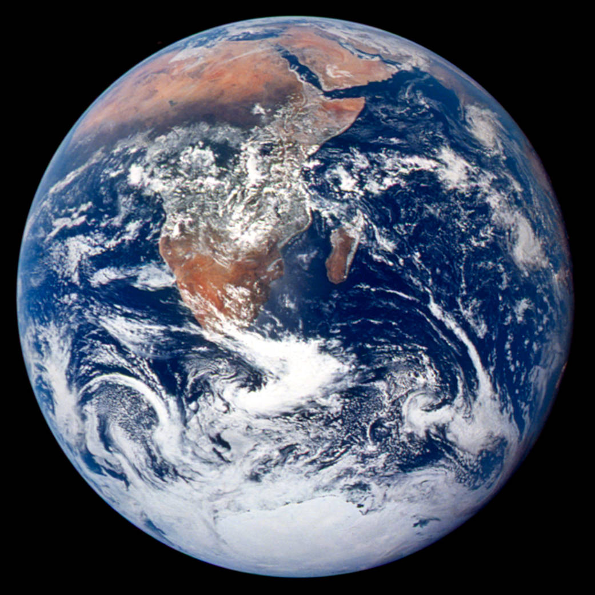

Explain why this lecture's central phenomenon matters: the inner planets share a formation environment but have dramatically different surfaces, atmospheres, and geological histories.
Use the key model idea that the nebular model explains broad architecture through a rotating disk.
Apply the lecture's quantitative tool with units, assumptions, and a physical interpretation.
Correct the misconception: Similar size does not guarantee similar climate or habitability; Venus and Earth are the warning case.
Reading anchor: OpenStax Astronomy 2e, Chapter 7.1-7.4 on solar-system overview and formation, plus Chapters 9-10 for terrestrial worlds.
Why This Question Matters
Spacecraft turned planetary astronomy from telescopic appearance into comparative geology. The same physics that explains Earth can be tested against Mercury, Venus, Mars, and the Moon.
Opening Phenomenon
The inner planets share a formation environment but have dramatically different surfaces, atmospheres, and geological histories.
First question: what is directly observed, and what part is an explanation built from a model?
Vocabulary for Reasoning
protoplanetary disk
accretion
differentiation
cratering
volcanism
greenhouse effect
comparative planetology
Use these terms to describe evidence and relationships, not as isolated vocabulary.
Evidence We Need to Explain
Planet orbits mostly lie in the same plane and direction.
Rocky planets are denser and closer to the Sun than giant planets.
Crater counts, volcanic features, and atmospheres preserve different histories.
Physical or Geometric Model
The nebular model explains broad architecture through a rotating disk.
Temperature gradients affected which materials condensed at different distances.
Planetary evolution depends on mass, internal heat, atmosphere, impacts, and solar distance.
Quantitative Tool
\[ \rho = \frac{M}{\frac{4}{3}\pi R^3} \]
Mean density is a clue to composition, but it is not a full interior model.
Worked Example
If two planets have similar radius but different mass, their mean densities reveal composition differences.
A high density supports a rock/metal-rich body; a low density may indicate ice or gas contribution.
Density is an average and does not uniquely determine internal layering.
The answer should connect density to composition while naming what density cannot reveal.
Visual Reasoning
Compare worlds by evidence: density, surface age, atmosphere, and energy balance rather than by appearance alone.
Which evidence compares composition?
Which evidence compares surface history?
Why can similar size still produce different climates?

Earth: visible oceans, clouds, and surfaceVenus: cloud-covered atmosphere hides the surface
Earth and Venus are similar in size, but their visible atmospheres already show divergent climate histories. Credits: NASA/Apollo 17 crew/JSC; L. Esposito, University of Colorado Boulder, and NASA/ESA.
Common Misconception
Similar size does not guarantee similar climate or habitability; Venus and Earth are the warning case.
Correct it with Venus and Earth: similar size, very different atmospheric evolution.
Active Learning Segment
Students compare Mercury, Venus, Earth, and Mars using radius, atmosphere, surface age, and evidence for geological activity.
Write a prediction first, compare reasoning with a neighbor, then revise your answer in one sentence.
Lab or Observing Connection
The planetary image lab uses surface evidence to infer relative ages and processes. Your interpretation should use visible surface evidence to compare geological histories.
Synthesis
Comparative planetology turns differences among worlds into experiments on formation and evolution.
What does density reveal?
What does surface evidence reveal?
Why do Earth and Venus make comparison powerful?
References and Visual Credits
OpenStax, Astronomy 2e: OpenStax Astronomy 2e, Chapter 7.1-7.4 on solar-system overview and formation, plus Chapters 9-10 for terrestrial worlds.
Local reference copy: references/openstax-astronomy-2e.pdf.
Visual: Earth and Venus are similar in size, but their visible atmospheres already show divergent climate histories. Credits: NASA/Apollo 17 crew/JSC; L. Esposito, University of Colorado Boulder, and NASA/ESA.